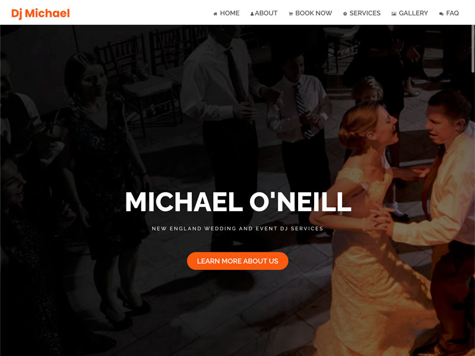

Diseñador Web Asequible en Lynn, MA
Si su negocio no aparece en los resultados de busqueda de Google, su sitio web necesita SEO Organico .
Desde restaurantes y comercios en el centro de Lynn hasta contratistas, oficinas medicas y negocios de servicios en Boston Street y Market Street, su negocio merece un sitio web que se destaque y convierta visitantes en clientes.
Diseñamos sitios web personalizados con WordPress para negocios en Lynn, MA, desarrollo web y SEO — ayudando a dueños locales a crecer en linea desde 2005.
Sitios web modernos que posicionan y convierten.
Llame o Envie un Mensaje de Texto:
Si su negocio no aparece en los resultados de busqueda de Google, su sitio web necesita SEO Organico .

¿Busca un diseñador de sitios web y desarrollador web asequible cerca de Lynn, MA?
JA Armira de GDWebPros lleva mas de 15 años construyendo sitios web para pequeños negocios, siguiendo las pautas de Google, Bing y Yahoo — con enfoque en la experiencia del usuario y los resultados de busqueda.
¿Ha buscado su negocio en Google con frases relacionadas a sus servicios? Por ejemplo: “mejor desarrollador WordPress en Lynn.”
Si usted es contratista general, compañia de jardineria, dentista, abogado, restaurante, o cualquier otro pequeño negocio ubicado en Lynn o un pueblo cercano como Saugus, Revere o Swampscott, y su negocio aparece en los resultados de búsqueda de Google para sus frases clave más importantes, está en buenas manos. Si no, podria necesitar un desarrollador web con experiencia práctica en servicios de SEO orgánico y mercadeo digital para posicionar su sitio web en Google, Bing, Yahoo y otros motores de búsqueda — idealmente uno certificado por Google.
Queremos que nuestros clientes entiendan que crear un sitio web es solo un paso hacia el mercadeo de su negocio. Para construir una presencia en linea exitosa, necesita un sitio web que realmente aparezca en los resultados de búsqueda.
Para lograrlo, necesita optimizarlo correctamente con SEO orgánico & mercadeo en redes sociales y seguir una estrategia de mercadeo local .
Si prefiere invertir el tiempo para hacerlo usted mismo, hay muchos recursos en linea. Si no, siempre puede llamar a GDWebPros al para una consulta de diseño web sin costo.
Revise nuestro trabajo de diseño & desarrollo web y nuestro trabajo de SEO orgánico & mercadeo en internet .
Solicite una consulta de diseño web o SEO gratis, sin compromiso, y le recomendaremos la solución más efectiva para su negocio.
Cuéntenos sobre su negocio en Lynn y lo que quiere lograr con su sitio web. Le enviaremos una cotización que se ajuste a su presupuesto.
Solicitar ConsultaVea ejemplos de nuestro trabajo de diseño web & SEO para clientes del área de Boston.
Ver Nuestro Trabajo